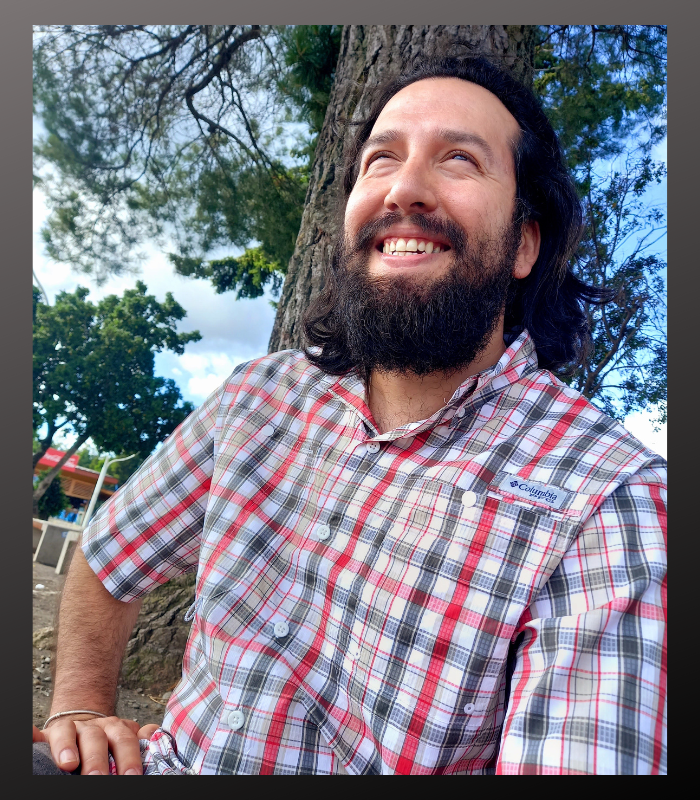

About
Jaime A Carcamo Sepulveda is a full-time Web Developer specializing in Front-End Web Development.
Education
Originally as a music major, Jaime attended Long Beach City College for music composition and Classical Guitar performance. After transferring to California State University of Los Angeles he became fascinated with technology and instead got a Bachelor of Science in Computer Information Systems and a minor in Real Estate. Jaime is an active Real Estate professional Licensed in California as a Real Estate Broker and Mortgage Loan Officer.Being an active learner, he is currently taking courses at Harvard university further expanding his knowledge in programming
Designs
Web designs are sketched out with figma. The web development begins from scratch using HTML5, CSS3 and Javascript. Actively exploring new possibilities in web design, Jaime's websites typically showcase 3-D designs, SVG animations, and significant use of DOM-manipulation to create dynamic-personalized websites.
Languages and Skills
Jaime is bilingual and speaks native English and Spanish. He is literate in Java, Python and SQL and currently learning C++.He is well-acquainted with: cURL, terminal commands, gitHub, emmet, flexbox, grid, SVG animations with CSS, git, semantical HTML, Bootstrap5, data flow and looping (if, conditional and switch statements), comfortable using objects, arrays, booleans, flags, prototyical inheritance, APIs, Node.js, NPM, Chrome Dev tools, built-in array methods, asynchronous JS (promises, callbacks) and DOM-manipulation,
